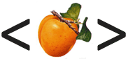

Hpricot the OhFourth #
Well, here’s a new release of Hpricot: 0.4. This I didn’t expect. Thank the persistent fellows who kept hitting my inbox. They’re cited in the CHANGELOG for sending me all manner of palsied HTML with quoting all askew and tilted.

In fact, did you know that you can give Hpricot a plain text file, say one that has just a few HTML snips in it, and you can alter those snips and then output the page again and it just works like that? This child’s only five weeks old still, so there are still encoding and entity and namespace matters to see to.
To install: gem install hpricot. Win32 and source gems.
What Does One Do With Hpricot?
- To learn about using Hpricot, try AnHpricotShowcase, which gives a bunch of common examples.
- Christoffer Sawicki’s Feedalizer uses Hpricot to turn plain HTML pages into feeds. See?
- WWW::Mechanize trunk now uses Hpricot for its automated browsing.
- And Zed’s RFuzz site has some Hpricot sample code, if you’re ready to ditch Net::HTTP for some superior socketry. (See also: RFuzz::Browser!)
Ezra
Very cool _why. I’m using hpricot to scrape dirty dirty insurance company websites for data extraction. It handles them fats and better then other solutions I’ve tried.
der-matthias
Digging with Hpricot is just plain fun.
Thank you, _why.
FlashHater
I knew something was up with Hpricot. I had just set my walpaper to the Hpricot logo!
I use Hpricot to scrape the Second Life status page durring downtimes, and use mpd.rb to activate my music when it comes up/goes down.
kballard
Hrm, I really should start using Hpricot.
I was going over the HpricotBasics page and I noticed something that seems incorrect. It says you can re-search an Hpricot::Elements, which works, but the example given returns another Hpricot::Elements as the result of the sub-search. When I try it, I get a simple array back.
why
Okay, [43], thanks kballard.
Daniel Berger
Nice.
I wonder if we’re overly enamored with the xpath syntax. I normally hate method_missing, but perhaps it has its place here. Instead of: How about? Too CGI ? Other problems?stepheneb
Sounds cool.
I’m on MacOS X 10 .7. I tried to install, told me it couldn’t find ragel and rlcodegen. OK, I’ll start with ragel. I tried using DarwinPorts, that dies trying to ./configure bison … Ok so I just load the archive from here: http://www.cs.queensu.ca/home/thurston/ragel/ragel-5.11.tar.gz … it tells me I need bison, flex gperf … I’ve already got bison and flex installed … so I get an archive of gperf here: http://ftp.wayne.edu/pub/gnu/gperf/gperf-3.0.2.tar.gz … but I get this error: “checking whether the C compiler works… configure: error: cannot run C compiled programs. If you meant to cross compile, use `—host’.”
Has anybody else had this problem?
Thanks
why
stephenb: How were you trying to install? Using the gem or from trunk?
For those who want to install from source: hpricot-0.4.tgz.
stepheneb
From subversion:
svn co https://code.whytheluckystiff.net/svn/hpricot/trunk hpricot => ... Checked out revision 43. rake => sh: line 1: rlcodegen: command not found sh: line 1: ragel: command not found
That’s when I starting looking for ragel.
MonkeeSage
There appear to be some ports of gperf for Darwin (google). Also, using the FreeBSD port of ragel might work (mabye, possibly, probably not), since Darwin is built on Mach3/FreeBSD.
pygmalion
I’ve completely ported my REXML code to Hpricot and couldn’t be happier with the speed improvements :)
But now I’m facing a very embarrassing issue (as in, I should have though of it before starting): Hpricot doesn’t substitute html entities :/
Boris K.
why,
In elements.rb
Line 205 should be
James
Wow. Just wow. It’s awesome to be able to parse a fragment or snippet into an object model.
I want my validator to be strict, but I want my parser to be loose. This works exactly how I’ve wanted something processing markup to work.
For those of us living in the real world where we can’t necessarily demand that other parties fix up their output or provide nice little parseable feeds.
Thanks for this gem, the mashup possibilities will be interesting :D
chickenkiller
why: Shouldn’t the wrap() method be called wrap!() instead? I searched for the result for a while until I discovered it directly modifies the document…
Tell me if I am wrong.
cheers
skwasha
MonkeeSage
skwasha: I just started playing with Hpricot , so there’s probably a better way to do it, but something like this would work:
chao
_why, thanks for sharing Hpricot.
One request: can you handle non XHTML compliant tags like
<image>, <hr> and <br>?Currently:
Thanks!
chao
oops, my bad. I guess I just don’t know my HTML from
!It’s really cool you do support these weird tags!
squarelover
Where was Hpricot 5 months ago when I needed to parse 10,000 inconsistent HTML pages for content and stuff them into a database. I had Regex coming out my nose. This would have been simpler and cleaner.
UnderpantsGnome
clambert
Thanks for Hpricot, why_. I’ve been using it for a number of things and it’s been a lifesaver. However, I came across a parser bug which occurs when you have a large HTML table with unclosed td tags—I get a stack overflow.
Doesn’t look like the Trac accepts tickets, so I’m filing it here. ;-)
Hpricot(open(‘http://survey.netcraft.com/Reports/0512/’).read)